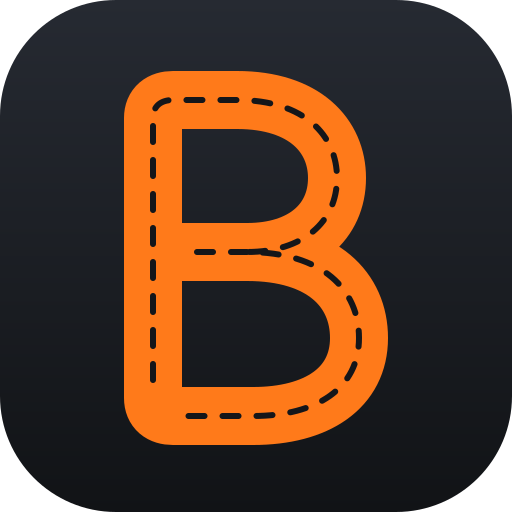

The navigation and group-drive app built for car clubs and driving enthusiasts. Find the roads worth driving, drive them together, and share the moments along the way.
Mainstream maps send everyone down the fastest road: motorways, toll roads and traffic. The winding country roads that make a drive memorable never get suggested.
Clubs organise convoys through messaging groups and shared pins. Cars split at junctions, someone always takes a wrong turn, and no one knows who has arrived.
Pit-stop photos get posted hours later, if at all, without the story of where the group stopped or how the drive went.
B-Roads is built around the drive itself, not just the destination.
Choose where you're starting and where you're heading. B-Roads avoids motorways and toll roads, and picks out the twisty, scenic routes worth driving.
Start a group drive and share a code. Everyone sees the group live on the map, and each driver's time from start to finish is recorded automatically.
Snap a photo at a pit stop. It's stamped with where you are and how the drive is going, ready to post to Instagram or Facebook in one tap.
Set a start and a destination. Search any place, or start from where you are now.
Motorways and tolls are avoided. B-Roads favours back roads and only uses big roads as a last resort.
Every route option is rated. Each alternative is scored on how twisty it is and how much of it stays on back roads. The best one is flagged Most fun.
Pick your mood. Relaxed for a scenic cruise, Balanced for most days, or Wild for the twistiest roads around.
Turn-by-turn guidance. The next turn is always on screen, with a warning if you leave the planned route.
Create a drive. The organiser picks the route and gets a short drive code.
Share the code or invite link. Members join from the meeting point with one tap.
Drive together, live. Everyone sees every car on the map and how far each driver has left to go. If someone loses signal, they rejoin automatically.
Arrive and compare. The clock starts when the organiser starts the drive and stops for each driver as they reach the destination. Once everyone is in, a results board shows each driver's time.
Solo runs count too. Drive a route alone and your time is still recorded.
Snap it in the app. No switching between camera, gallery and social apps.
Stamped automatically. The photo shows where you've stopped, the drive name and how long you've been on the road.
One tap to post. Send it straight to an Instagram Story, an Instagram post or Facebook. A caption with the location is ready to paste.
A working prototype for iPhone and Android with back-road routing, live timed group drives and pit stop sharing all built. Road testing with drivers is under way.
Car clubs: join our pilot drives, help shape the features your club needs, and get early access.
Investors and partners: we're looking for partners to take B-Roads from prototype to launch. Let's talk.